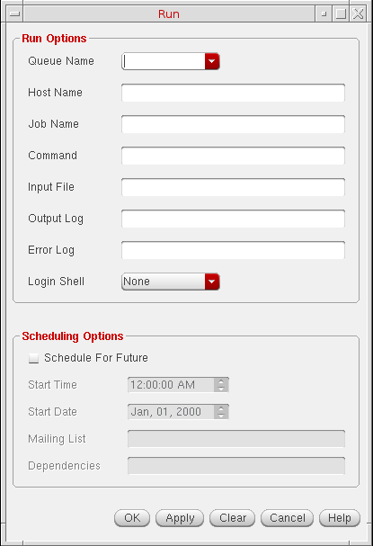
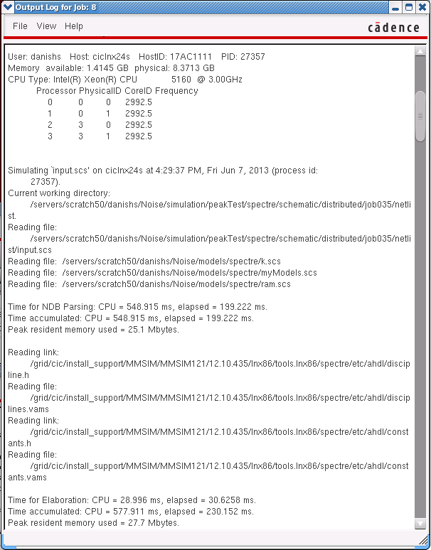
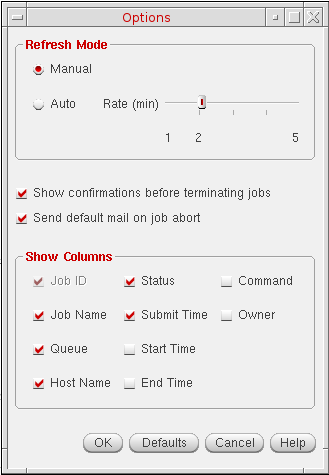
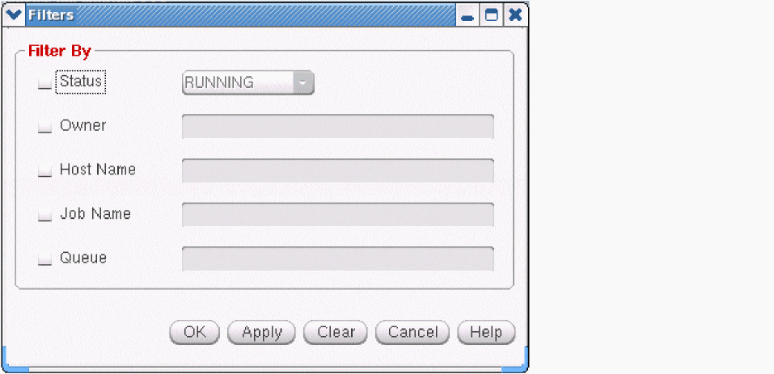

2
Job Management using Job Monitor
This chapter discusses the following topics:
- Running Jobs
- Displaying Output and Error Log Files
- Managing the Status of a Job
- Customizing the Jobs Table View
- Updating Job Information
- Searching for Specific Jobs
- Displaying Information about a Job
Running Jobs
To run a job or schedule it for later, do the following:
-
Choose Job – Run.
The Run form appears.
 - From the Queue Name drop-down list box, choose the queue in which you want to run the job or leave it blank for the job to run in the DEFAULT queue.
-
(Optional) In the Host Name field, type the name of the host on which you want to run the job.
- If you specify both Queue Name and Host Name, the job runs when the host becomes available on the queue.
- If you specify only Queue Name, the job runs on the host that has the least load as identified by the underlying distributed resource management systems. The job is dispatched when a host becomes available.
- If you specify only Host Name, or if you specify neither Queue Name nor Host Name, the job is run on the DEFAULT queue. The DEFAULT queue is served by all hosts in the network.
- (Optional) In the Job Name field, type the name of the job.
- In the Command field, type the name of the command.
- In the Input File field, type the name of the input file.
- (Optional) In the Output Log field, type the filename to store the errors that might prevent the job from running.
- (Optional) In the Error Log field, type the filename to store the error log.
-
Run the job now or later as required.
-
To run the job immediately, click OK to launch the job and close the form.
Alternatively, click Apply to launch the job. The Run form remains open to let you launch additional jobs. - To run the job later:
- In the Scheduling Options section, select the Schedule For Future check box. The Start Time and the Start Date fields are set to the current time and date.
- In Start Time, specify a new time or use the spin box to select a new time.
- In Start Date, specify a new date or use the spin box to select a new date.
- (Optional) In the Mailing List field, enter the e-mail address of the users you want to notify about the job status.
- In the Dependencies field, type the ID of the job that must end before this job starts.
- Click OK.
-
To run the job immediately, click OK to launch the job and close the form.
Displaying Output and Error Log Files
You can display the output and error status of jobs using the Output/Error Log form. This form is updated dynamically when the file changes.
To display the
- In the Jobs table view, select the job whose files you want to view.
-
Choose View – Log Files – Output or View – Log Files – Error.The Log Files option is enabled only if a single job is selected and it has an associated output and error log file. The Output and Error options are enabled or disabled depending on whether the selected job has an output or an error log file.The log form for the selected job appears.
The status bar displays the line count for the text you select in the window.
Managing the Status of a Job
You can change the status of a job in one of the following ways:
Job States in Job Monitor
A job can have the following states.
| State | Description |
Suspending a Job
- In the Jobs table view, select the jobs you want to suspend.
-
Choose Job – Suspend.
The Status column in the Jobs table view shows the selected jobs as suspended.
If the job cannot be suspended, an error dialog box appears. You can skip the job, process the next selected job, or cancel the operation.
Terminating a Job
- In the Jobs table view, select the jobs you want to terminate.
-
Choose Job – Terminate.
A confirmation dialog box prompts you to confirm the termination process.If you deselect the Show confirmations before terminating jobs check box in the Options form, the confirmation dialog box does not appear.The Status column in the Jobs table view shows the selected jobs as terminated.
If the job cannot be terminated, an error dialog box appears. You can skip the job, process the next job in the selected set, or cancel the operation.
Resuming a Job
- In the Jobs table view, click the suspended jobs you want to resume.
-
Choose Job – Resume.
The Status column in the Jobs table view shows the selected jobs as running.
If the job cannot be resumed, an error dialog box appears. You can skip the job, process the next job in the selected set, or cancel the operation.
Customizing the Jobs Table View
You can customize the Jobs table view by displaying or hiding column headings, changing the width of the columns, and changing the sort order of items in the columns.
Displaying or Hiding Column Headings
To display or hide column headings in the Jobs table view:
-
Choose View – Options.
The Options form appears.
 - In the Show Columns section, select or deselect the headings you want in the Jobs table view.
- Click OK.
Resizing Column Headings
Sorting Jobs
By default, the jobs are sorted in descending order of the job ID. You can also sort the jobs according to other attributes. The other attributes sort the jobs alphanumerically except the submit time, start time, and the end time attributes, which are sorted by date.
To sort the jobs according to a different job attribute:
Updating Job Information
You can see the latest information in the Jobs table view by refreshing the display. Job Monitor has two refresh modes, Manual and Auto. Auto refresh mode lets you set specific time intervals for the information to be reloaded. Manual refresh mode lets you reload the information on demand.
-
Choose View – Options.
The Options form appears. - In the Refresh Mode section, do one of the following:
- Click OK.
Searching for Specific Jobs
-
Choose View – Filters.
The Filters form appears.
 - Select the required filters.
- Specify the values for each filter.
-
Click OK.
The Jobs table view displays the jobs matching the specified values.
Displaying Information about a Job
To display information about a job:
Return to top